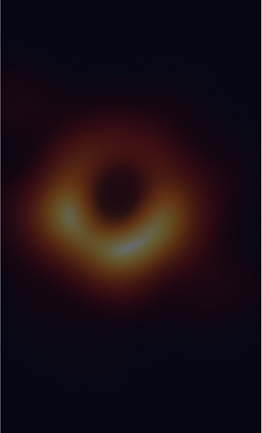

Articles

Read 7 minutes
Supermassive black hole
Scientists first recorded a collision of black holes of significantly different masses
An unprecedented observation gave astronomers a rare opportunity to get a ton of new data and learn more about how black holes rotate. Researchers from the LIGO-Virgo collaboration, which combines observatories located in the USA and Italy, for the first time in the history of observations discovered a collision between two black holes of significantly different masses. This discovery will serve as a source of a lot of new data for astrophysics and gravitational physics and can change a lot in existing ideas. Scientists posted their work on the arXiv preprint server, and also made a report at a meeting of the American Physical Society.
In previously recorded collisions, waves were formed that were similar in shape to linear frequency modulation: their power and frequency increased at the time of the collision. Since in those cases the black holes had the same mass, they returned to the same relative position in each orbit. This leads to the fact that the frequency of gravitational waves is approximately twice the orbital frequency of the binary system, that is, the time it takes for black holes to rotate around each other.
Visualization of the collision of two different sized black holes
Weak space-time vibrations showed that at least one of the black holes rotated before confluence. This gives astronomers valuable information about one of the few features of these complex objects to study. “This is an exceptional event,” emphasizes author Maya Fischbach, an astrophysicist at the University of Chicago, Illinois. All such mergers of black holes, recorded earlier, occurred with the participation of objects of the same mass, so the new data pretty much change and complement existing models.
The event itself, recorded as GW190412, occurred at a distance of 2.4 billion light-years from us and was recorded on April 12, 2019, and a few days ago, researchers completed their work on its analysis. According to scientists, one of the two colliding black holes had an estimated mass of about 8.4 solar masses, and the other was three and a half times larger, about 29.7 solar masses. Due to such an imbalance, the space around the larger one was distorted, as a result of which the trajectory of another black hole deviated from the ideal spiral. This is found in the gravitational waves arising during such a “dance”. In previously recorded collisions, waves were formed that were similar in shape to linear frequency modulation: their power and frequency increased at the time of the collision. Since in those cases the black holes had the same mass, they returned to the same relative position in each orbit. This leads to the fact that the frequency of gravitational waves is approximately twice the orbital frequency of the binary system, that is, the time it takes for black holes to rotate around each other.
But with GW190412 it was different: gravitational waves behaved in a more complex way. Due to the fact that the system has a significant mass imbalance, the orbit becomes uneven. This creates a second, weaker frequency of gravitational waves, which produces two different frequencies: you can imagine them as two simultaneously vibrating guitar strings.
Such events, which stand out from the general series, offer physicists new, more accurate ways to test Albert Einstein's theory of gravity, General Relativity. The frequency dyad observed during the merger, in fact, shows the separation of the gravitational wave signal into an earlier part and a later one: this separation is based on equations derived from the General theory of relativity. The calculations of signal division coincide with the observed ones, which gives one of the most reliable results of this test for today.
In particular, researchers were able to use this data to consider the "rotation" of black holes. Earlier information about gravitational waves did not make it possible to confirm previous observations about this feature of black holes made for similar objects located in our Galaxy.
Astrophysicists hope that new data can also shed light on how black holes formed and how they came into each other's orbit. Existing models of the formation of double black holes assume equal pairs of masses.
New information will help with greater accuracy measure the distance of the event from the Milky Way. The accumulation of many such measurements can provide a new way that will allow you to map the history of the expansion of the universe.